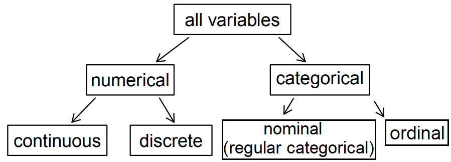
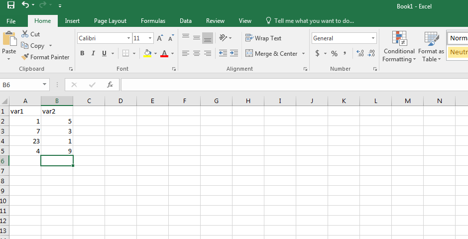
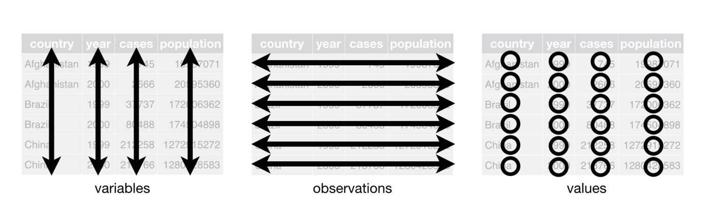
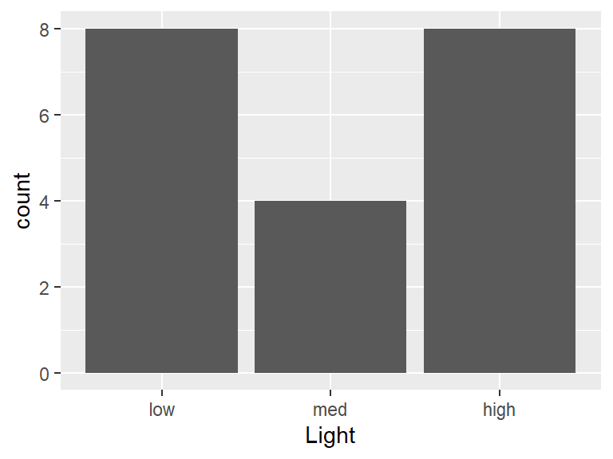
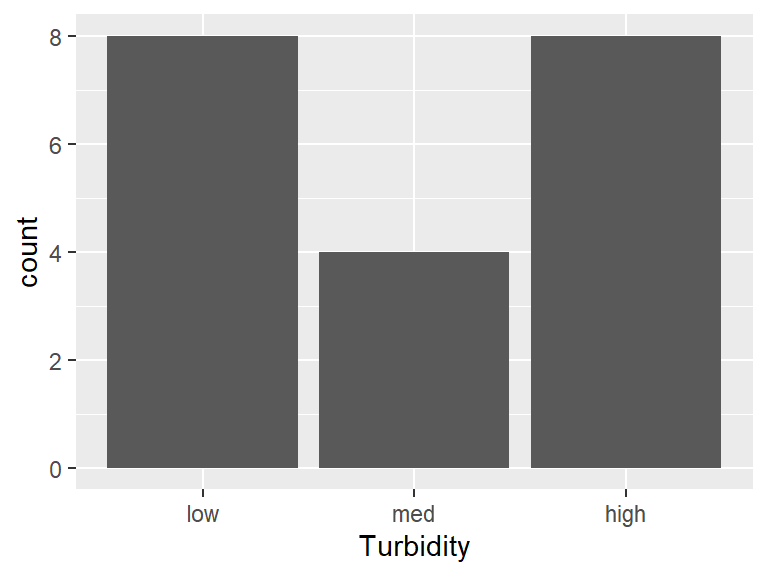
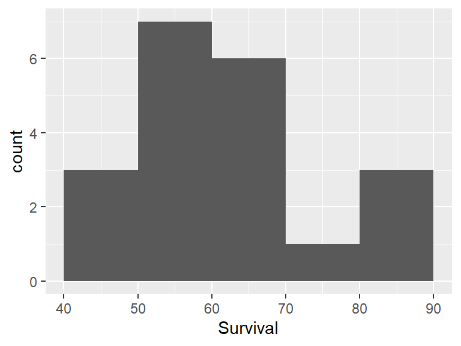

A variable is any characteristic whose value may change from one individual (or object) to another.
Data result from making observations on a single variable (called univariate data) or simultaneously on two or more variables (called multivariate data).
Note
Recall the data given in Chapter 1. Each row in the data table above represents a single early-stage Delta smelt larvae in the sample. The formal name for a row is a case or observational unit. The columns represent characteristics of interest for each early-stage Delta smelt larvae, where each column is referred to as a variable. Here, the only characteristics that are of concern for each larvae are the level of exposure of light intensity (Light), turbidity level exposure (Turbidity), and the percentage of larvae that survived. For example, the first row represents a early-stage Delta smelt larvae that was exposed to a light intensity of 4.5 \(\mu mol/m^2/s\) and a turbidity level of 2 NTUs, where only 56.8% of larvae survived under these conditions.
7.2 Types of variables
Variables in a statistical study can be classified as either categorical or numerical.
A variable is categorical if the individual observations are categorical responses, such as labels, people’s attributes, opinions, etc.
A variable is numerical (or quantitative) if its corresponding observations are a numerical values that are measured or counted.
Factor variables generally refers to the software’s treatment of categorical variables. The levels of a factor variable refers to the value that a categorical variable takes on. For example, the variable “first-generation college student” may take on levels 0 and 1, with 1 representing a student who is first-generation college student born before 1999 and 0 representing a student whose is not a first-generation college student. Factor variable will be used interchangeably with categorical variable. If the levels of a factor variables have a natural ordering, it is called an ordinal variable, while a factor variable without this type of special ordering is called a nominal variable. For readability, factor variables will be treated as a nominal factor variables in this resource.
Note
The case study data given in Chapter 1 frame consist of three variables labeled as Light, Turbidity, and Survival in the data set.
Survival is a continuous numerical variable. These observations can take a wide range of values. A numerical variable is continuous if its possible values form an entire interval on the number line.
Light and Turbidity are both factor variables, with each having levels low, medium, and high.

Figure 7.1: Breakdown of variables into their respective types
R and factor variables
When data are imported (described in Chapter C) that contains factor variables, R may not automatically recognize them as such1. If the levels of the factor variables are represented by numbers, R by default, classifies these variables as numeric. If the levels are instead letters or words, R will treat them as character variables by default.
To convert a variable to a factor variable, you can use the mutate() function in the dplyr package.
R functions
### mutate( data ,
### 'new variable' = 'function of variable in data frame', ...)
# data: Replace with the name of the dataframe being used.
# 'new variable' = 'function of variable in data frame': Replace
# 'new variable' with name of desired variable
# and set equal to a function of
# a current variable in the dataframe.
# This will add the new variable to the
# dataframe. The 'new variable' name may
# also be replaced with the name of a current
# variable as this will override/replace the
# current variable.
#...: additional new variables can be added to the dataframe.
#
### summary( data )
# Note: This function provides a summary of each numerical variable
# in the data frame, including the five-number summary (minimum,
# lower quartile, median, upper quartile, maximum) and the number
# of non-missing observations. For factor variables, the function
# provides the count of each level of the factor variable.
Note
The case study data given in Chapter 1 consist of two factor variables. The code below instructs R that Light and Turbidity are factor variables by using the function mutate(). Combined with mutate(), the function as.factor() converts a variable into a factor variable
# Import the dataset 'dssurv' from a csv filedssurv<-read.csv("datasets/dssurv.csv")# Print a summary of the dataset, including the # five-number summary for numeric variables and counts # of observations for categorical variables.summary(dssurv)#> Light Turbidity Survival #> Length:20 Length:20 Min. :45.02 #> Class :character Class :character 1st Qu.:55.79 #> Mode :character Mode :character Median :59.56 #> Mean :62.22 #> 3rd Qu.:67.24 #> Max. :89.09# Load the 'dplyr' package which provides the 'mutate()' functionlibrary(dplyr)# Replace `Light` and `Turbidity` with the factor# versions. The code below tells R to convert # `Light` and `Turbidity` into factor variables.dssurv<-mutate(dssurv, Light=as.factor(Light) , Turbidity=as.factor(Turbidity))# Print a new summary of the updated dataset.summary(dssurv)#> Light Turbidity Survival #> high:8 high:8 Min. :45.02 #> low :8 low :8 1st Qu.:55.79 #> med :4 med :4 Median :59.56 #> Mean :62.22 #> 3rd Qu.:67.24 #> Max. :89.09
7.3 .csv files
To provide a consistent approach to using R, it is assumed that any research data will be saved in the tidy format using a comma separated values (.csv) file. A .csv may be viewed with a spread sheet program such as Microsoft Excel. It is assumed readers have used an excel spreadsheet. If not, please view the tutorial Excel Tutorial for Beginners .
To store data in a .csv file, organize your data in an Excel worksheet, such that the first row (Row 1) contains the column (variable) names and each subsequent row contains all the necessary information for each data point. Next, save the worksheet as a .csv file type.

Sample .csv file in tidy format
7.4 Tidy data
Note the format of the data presented in Chapter 1:
Each variable forms a column.
Each observation forms a row.
Each value must have its own cell.
Then data are stored in this format, it is called tidy data(Wickham 2014).

Figure 7.2: Tidy data format. source: Wickham and Grolemund (2016)
The R code below imports two versions of the data (a tidy and non-tidy version). The R function read.csv() is described in Chapter C. The functionhead() (tail()) will print out the first (last) few rows of a data frame.
R functions
### head( data , n )
# data: Replace with the name of the dataframe
# n: Set equal to a number. The first 'n' rows will be printed
#
### tail( data , n )
# Note: It will print the last 'n' rows.
#
Note
The code below imports the data (tidy and non-tidy format) for the case study given in Chapter 4.
# Import tidy data from a csv file and store it in a dataframe called "bmidf"bmidf<-read.csv("datasets/BMIcsdata.csv")# Import non-tidy data from a csv file and store it in a dataframe called "bmidfnt"bmidfnt<-read.csv("datasets/BMIcsdataNT.csv")# View the first 5 rows of the "bmidf" dataframe.head(bmidf , n=5)#> Country Sex Region Year BMI#> 1 Afghanistan Men Rural 1985 19.7#> 2 Afghanistan Men Urban 1985 22.4#> 3 Afghanistan Men Rural 2017 22.5#> 4 Afghanistan Men Urban 2017 23.6#> 5 Afghanistan Women Rural 1985 20.1# View the last 5 rows of the "bmidf" dataframe.head(bmidfnt , n=5)#> Country Sex Region yr.1985 yr.2017#> 1 Afghanistan Men Rural 19.7 22.5#> 2 Afghanistan Men Urban 22.4 23.6#> 3 Afghanistan Women Rural 20.1 23.6#> 4 Afghanistan Women Urban 23.2 26.3#> 5 Albania Men Rural 25.0 26.9
The tidy format make a clear distinction between a variable, an observation and a value. The format of the second data set may be useful for quickly observing some year to year changes. However, this format violates the tidy form because information regarding year appears both in the rows and columns. Tidy data helps to think about a data set in terms of variables and their observed values.
7.5 Codebooks
An important task in a data based research project is to document the structure and content of project dataset. This can be done in the form of a codebook, a file that lists at least the names of the variables, variable descriptions, and data source. Sometimes it may also provide the variables’ type (e.g., continuous, categorical) and levels of factor variables (e.g., 1 = disagree,…, 3 = agree). Writing a codebook is an important step in the managing the data aspect of your research project. The codebook will serve as an important reference for the researcher and any collaborators, and there are multiple approaches for creating a codebook, with Excel being a popular choice. The next section contains a sample codebook for the case study data.
Note
Here, a codebook is provided for the data given in Chapter 1.
Codebook
The Delta smelt case study data frame has the following dimensions:
Feature
Result
Number of observations
20
Number of variables
3
Codebook summary table
Label
Variable
Class
# Unique values
Missing
Description
low dosage (4.5 micromols per square meter per second), medium dosage (6.75 micromols per square meter per second), high dosage (9 micromols per square meter per second)
[Light]
factor
3
0.00 %
low dosage (2 NTUs), medium dosage (5.5 NTUs), high dosage (9 NTUs)
[Turbidity]
factor
3
0.00 %
Percentage of early-stage Delta smelt larvae (0-40 days post hatch) that survived
[Survival]
numeric
20
0.00 %
Variable list
Light
low dosage (4.5 micromols per square meter per second), medium dosage (6.75 micromols per square meter per second), high dosage (9 micromols per square meter per second)
Feature
Result
Variable type
factor
Number of missing obs.
0 (0 %)
Number of unique values
3
Mode
“low”
Reference category
low

Observed factor levels: “high”, “low”, “med”.
Turbidity
low dosage (2 NTUs), medium dosage (5.5 NTUs), high dosage (9 NTUs)
Feature
Result
Variable type
factor
Number of missing obs.
0 (0 %)
Number of unique values
3
Mode
“low”
Reference category
low

Observed factor levels: “high”, “low”, “med”.
Survival
Percentage of early-stage Delta smelt larvae (0-40 days post hatch) that survived
Feature
Result
Variable type
numeric
Number of missing obs.
0 (0 %)
Number of unique values
20
Median
59.56
1st and 3rd quartiles
55.79; 67.24
Min. and max.
45.02; 89.09

Report generation information:
Created by: Eduardo L. Montoya (email:emontoya2@csub.edu).
Source: The data are a subset of the data provided by Dr. Tien-Chieh Hung. The data are a subset of the data analyzed in Tigan et al. (2020).
Codebook created using dataMaid v1.4.1 [Pkg: 2021-10-08 from CRAN (R 4.1.3)]
Tigan, Galen, William Mulvaney, Luke Ellison, Andrew Schultz, and Tien-Chieh Hung. 2020. “Effects of Light and Turbidity on Feeding, Growth, and Survival of Larval Delta Smelt (Hypomesus Transpacificus, Actinopterygii, Osmeridae).”Hydrobiologia 847 (13): 2883–94. https://doi.org/10.1007/s10750-020-04280-4.
Wickham, Hadley, and Garrett Grolemund. 2016. R for Data Science: Import, Tidy, Transform, Visualize, and Model Data. " O’Reilly Media, Inc.".
There are various functions for importing data from different file formats. While some of these functions may correctly treat factor variables as factors, the functions used in these modules for data importation do not do so by default.↩︎